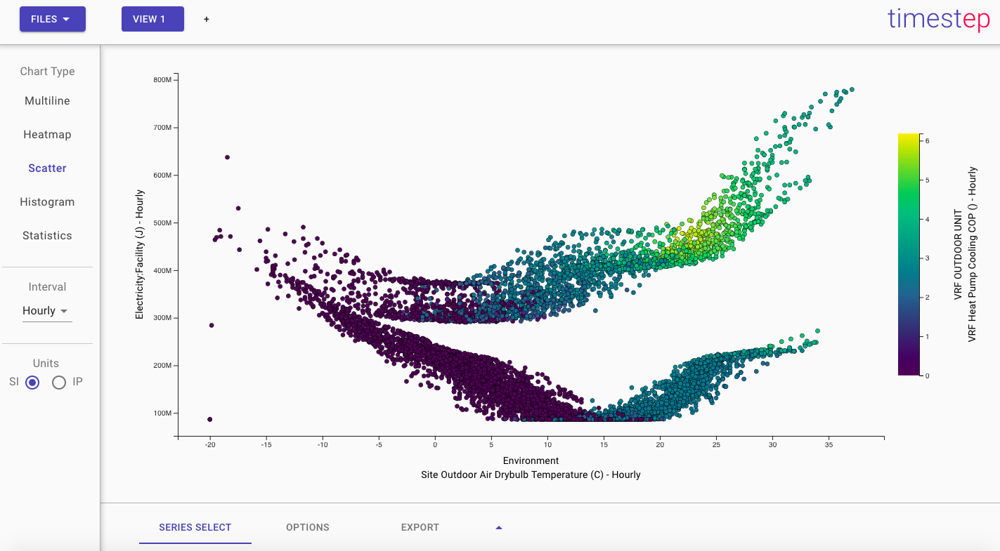
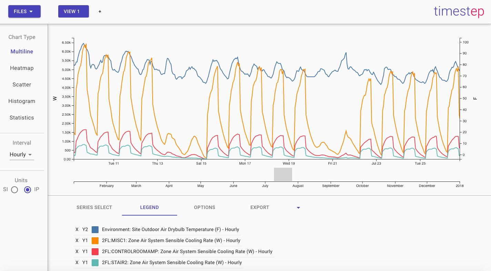
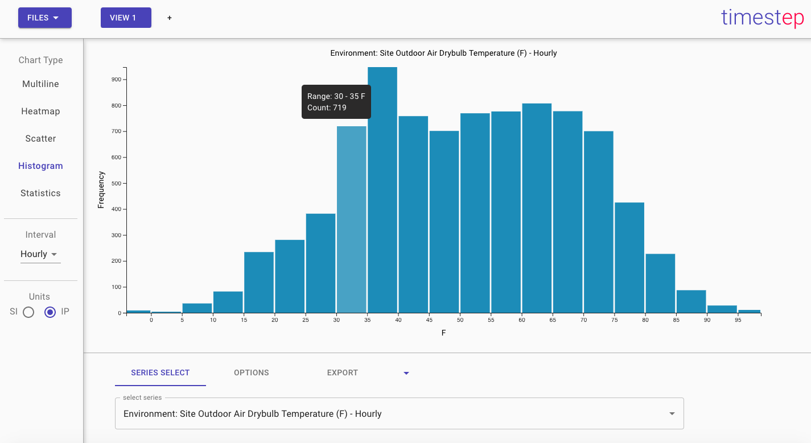
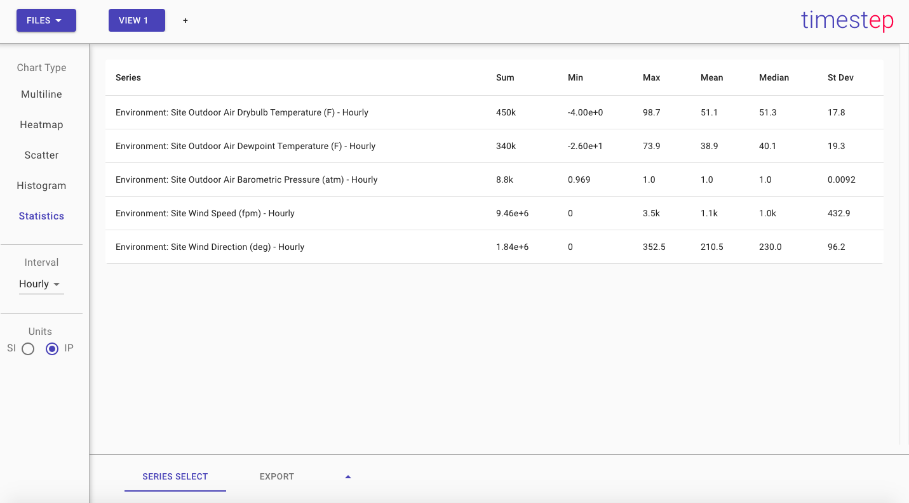
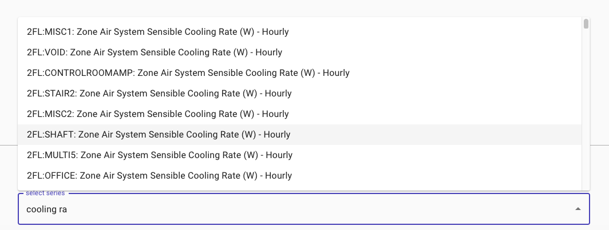
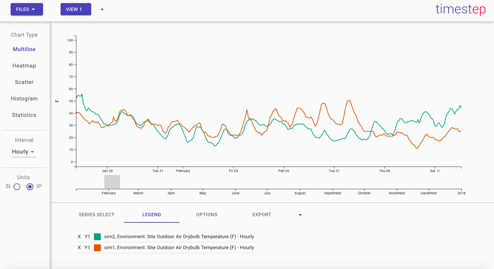
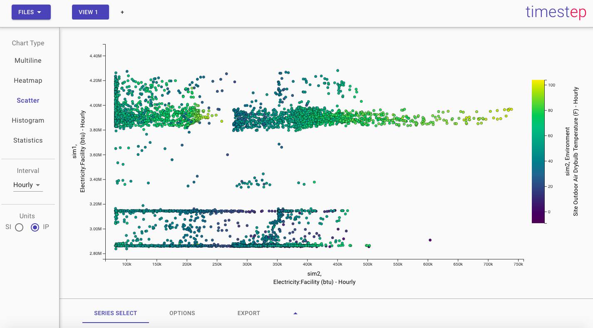

EnergyPlus timeseries viewer
See your simulation results in seconds, not minutes.
Timestep reads EnergyPlus SQLite and raw .eso output
directly, loading and charting very large simulation files in seconds
rather than minutes — no model re-run, no waiting.
Why
Built for output that other tools choke on
EnergyPlus has rich support for hourly and sub-hourly reporting, but as a model grows larger and more complex, the simulation output gets unwieldy for many existing tools — long enough load times that just viewing your results becomes the bottleneck.
Timestep is a better answer: a clean, near-instantaneous querying interface with modern data visualization. It reads the EnergyPlus SQLite output directly, so very large files open and chart in seconds rather than minutes.
What's in the beta
Features
.sql / .eso
Loads EnergyPlus .sql and raw .eso output
directly. .eso is converted to SQLite on first open
and cached — no model re-run.
charts
Heatmap, multi-line, scatter, histogram, and statistical-summary views over your timeseries.
multi-run
Load multiple simulation files at once and overlay the same variable across runs to compare them directly.
units
SI/IP units with honest cfm/gpm labels resolved from the
.bnd node fluid type, plus load-time data-quality
warnings.
theme
Dark and light mode, so it fits whatever the rest of your screen is doing.
export
CSV and clipboard export, saved sessions, and multiple views within a single session.
Get started
Install and setup
Timestep is in beta (v2.0.0). It's stable enough for daily use, but you may hit rough edges — please file what you find.
-
Download the installer for your platform from the
latest GitHub Release
(marked beta) — macOS (
.dmg), Windows (.exeor.msi), or Linux (.AppImage,.deb,.rpm). - Run the installer and launch timestep.
- The beta isn't code-signed yet, so your OS will warn you. On Windows, choose More info → Run anyway at the "Windows protected your PC" prompt. On macOS, right-click the app and choose Open — see opening apps from unidentified developers.
-
Point it at an EnergyPlus run: either the
eplusout.sqlwritten withOutput:SQLite, SimpleAndTabularin the IDF, or the raweplusout.esodirectly — no re-run needed. -
Click Load Files, or drag
.sql/.esofiles (with their sibling.bndfor cfm/gpm units) onto the window. - Start exploring your model results.
A look inside
Screenshots








Open source
Contributing
Timestep is open-source and welcomes contributions. It's built with:
- Electron
- React
- Redux
- D3
- Material UI
- TypeScript
If you'd like to pitch in, head to the main GitHub repo.